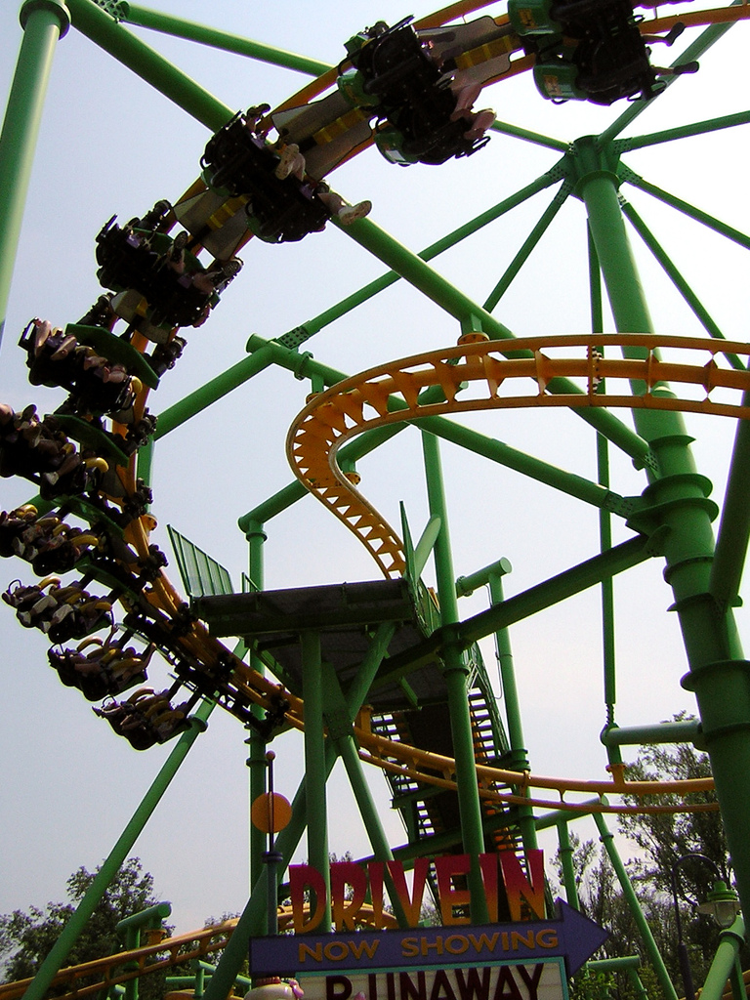
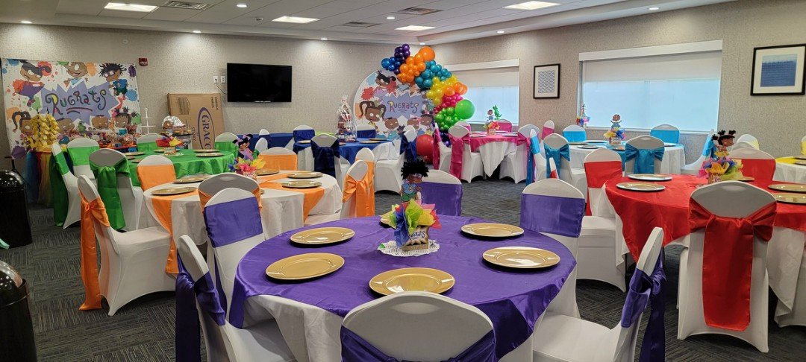
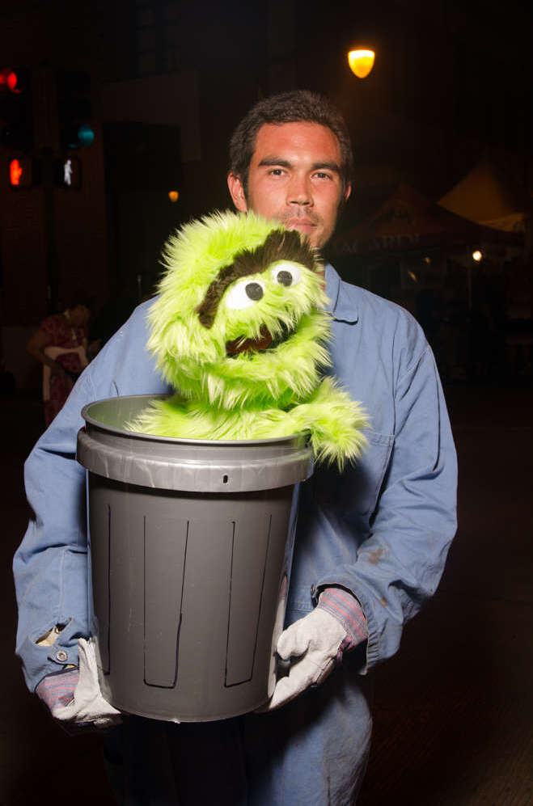
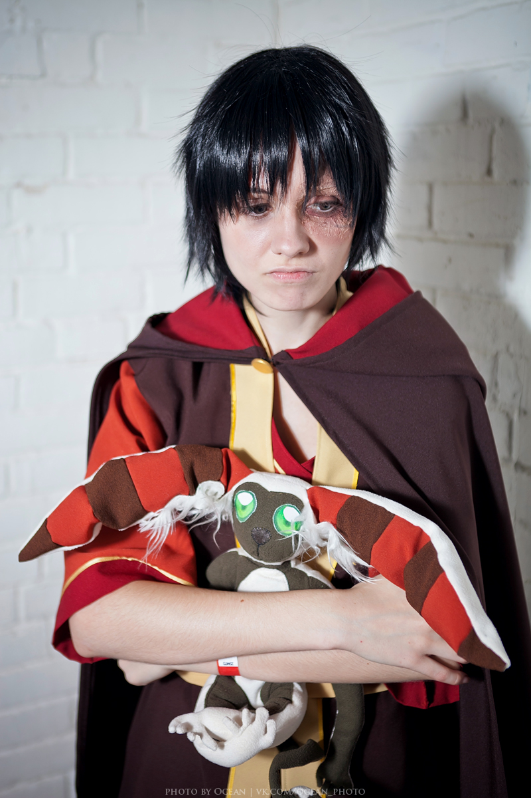

Parasocialize.
One-sided relationships are just easier. The news, the argument, the research and the whole history of it — in 10 places it turns up.
47 stories · free · every one signed by a person · all of it, searchable →
The top 8 · this week · rotating

1. The letter from the NESTRugrats, 1991
2. Tommy finds the gun and it worksRugrats, 1995
3. The grouch on the telethonThe grouch, Sesame Street, 1990s
4. Zuko's redemption arcAvatar: The Last Airbender, 2005Not one frame of these cartoons is freely licensed, so every picture above is of the audience instead — which is the list.
Read the whole listRotates weekly. This week it is the top 8 parasocial moments in saturday morning cartoons of the 1990s.
Ten ways it shows up · the top story in each
An economics think tank argues parasocial relationships are just imaginary friends for adults
I am going to defend this one against its own author. The Farrah Fawcett poster panic of 1976 and this…
6 more → A CREATORA streamer said his best friend of 25 years took $100,000. Fans said loyalty is dead
Twenty-five years of friendship does not survive being a public commodity, and everybody involved is surprised. I have seen this…
6 more → A CHARACTERA clown got a prequel and four million households signed up without signing anything
A clown gets a prequel. That sentence is the entire essay, and I have written about this before and I…
2 more → T COMPANIONThe EU is about to rewrite what a companion app is allowed to do to a child
Read the specific wording, because it matters: not ban the app, ban the attachment. That is a genuinely different thing…
9 more → Y WORLDYouTube is turning Shorts into episodic television
Shorts were supposed to be the snack. Instead somebody noticed that people want a story with a next part, and…
3 more → Y BRANDYouTube just put your spending on the scoreboard
Here is what nobody said out loud at Made on YouTube: the relationship is now a fixture with a sponsorship…
5 more → A CROSSOVERA 27-year marriage ends and the coverage is about what the public felt
I do not think a stranger's marriage ending is your business and I do not think you are obliged to…
2 more → A CONTESTA glimpse is not a full picture and the comments decided otherwise
Here is the whole mechanism in one summer: visibility got mistaken for access, and access got mistaken for entitlement. You…
2 more → A GRIEFA famous author was saved by a fictional family and then wrote a novel about it
I want to note this without making it about me, which is difficult, so I will make it about the…
11 more → A DANGERA fan was convicted of stalking Jungkook. Twenty-two visits. One hundred and thirty-three doorbell rings
I am not going to do the thing where I explain this away, and I notice that every parasocial site…
1 more →Go deeper · the definitive bits
One email · Fridays · free
Five stories and one argument, once a week.
No algorithm chose it. It pays for the machine that finds the stories.
+ spot something we missed? 60-sec tip → · read last friday → · rss →